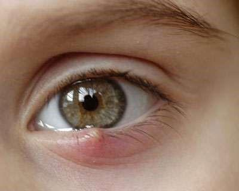

Part I · Hordeolum
Hordeolum externum (Stye)
Definition
Acute suppurative inflammation of the Zeiss gland.
Etiology
- Predisposing factors: as in blepharitis.
- Causative agent: Staphylococcus aureus.
Clinical picture
- Symptoms: painful red swelling at the eyelid margin.
- Signs: red tender swelling at the root of a lash; a yellow point forms and may be abscess formation.
